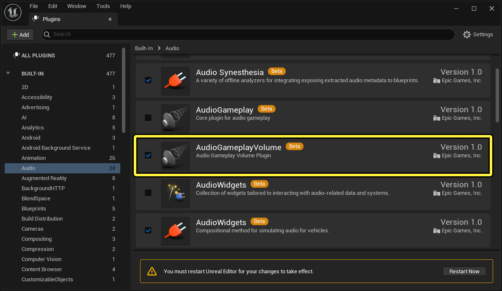
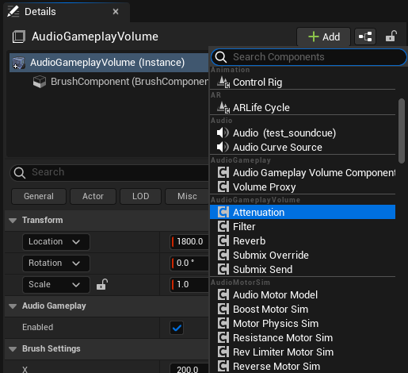
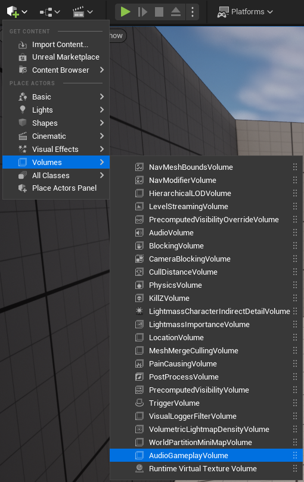
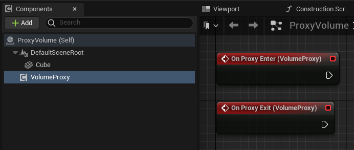

Узнайте, как использовать эту функцию бета-версию, но будьте осторожны при ее применении.
Система Громкость звука в игровом процессе — это новый подход к зональной обработке звука, который позволяет звукорежиссерам определять физические области, в которых к звукам применяются эффекты в зависимости от положения слушателя.
Например, можно добавить реверберацию, когда слушатель находится в определенной комнате, чтобы имитировать звуковые волны, отражающиеся от стен, или применить фильтр нижних частот к звукам за пределами комнаты, чтобы имитировать эффект приглушения звука стенами.
Устаревшая система регулировки громкости может создавать трудности для звукорежиссеров, поскольку функциональность каждого регулятора громкости фиксирована во время выполнения и не может быть расширена без изменения кода движка. Кроме того, все возможные настройки доступны для каждого регулятора громкости, что может быть неудобно, если вам нужно использовать лишь часть доступных опций. Эта система также может усложнять рабочий процесс, поскольку для каждого регулятора громкости требуется отдельный актор на уровне, что затрудняет интеграцию системы.
Этот новый подход, призванный заменить устаревшую систему, использует архитектуру на основе плагинов и компонентов, что позволяет решить многие проблемы, связанные с устаревшим подходом, и предоставляет разработчикам больше гибкости.

Вы можете включить или отключить плагин Audio Gameplay Volume в зависимости от потребностей вашего проекта. Кроме того, вы можете использовать предоставленный API на C++ или интерфейс взаимодействия Blueprint, чтобы расширить функциональность за счет новых эффектов, позиционных взаимодействий с игроком и многого другого.

Модули Audio Gameplay Volumes построены по принципу модульных компонентов. Каждый компонент содержит настраиваемое поведение, которое можно добавить в модуль Volume по отдельности или в сочетании с другими компонентами, чтобы создать собственную функциональность для случаев, когда слушатель входит в модуль или выходит из него.
Эти компоненты обеспечивают ту же функциональность, что и устаревшая система регулировки громкости звука, но с более широкими возможностями управления, поскольку каждая функция представлена отдельным компонентом.
Типы поведенческих компонентов:
У каждого компонента есть значение приоритета, которое определяет, какой компонент будет использоваться в тех случаях, когда слушатель находится в нескольких томах, содержащих допустимый компонент одного и того же типа.

Аудиогеймплейные тома обеспечивают глубокую интеграцию с Blueprints, что дает звукорежиссерам гибкость в реализации системы. Вы можете размещать тома непосредственно на уровне в качестве отдельных объектов или добавлять их в качестве компонентов в любой Blueprint-объект.
Вы можете реализовать пользовательские проверки столкновений в Blueprint Actors, чтобы имитировать ситуацию, когда слушатель входит в зону действия или выходит из нее. Таким образом, вам не придется вручную корректировать расположение или преобразование объектов на уровне.
Во многих проектах работа над звуком начинается ближе к концу производственного цикла. Из-за этого бывает сложно реализовать надежную аудиосистему, которая будет органично сочетаться с другими игровыми функциями. Система регулировки громкости в аудиогеймплее учитывает это и позволяет прикреплять компоненты регулировки громкости к любому объекту на уровне.
Кроме того, мы оптимизировали пользовательский интерфейс, чтобы сделать его более интуитивно понятным для звукорежиссеров.
Обработка громкости и проверка столкновений перенесены из игрового потока в аудиопоток. Это значительно повышает производительность и позволяет расширять систему, не беспокоясь о потокобезопасности.

Помимо замены и улучшения устаревших функций, система регулировки громкости игрового процесса предлагает новую функциональность Proxy. С помощью прокси можно использовать системные функции без традиционного объекта регулировки громкости игрового процесса.
Существует два типа прокси-серверов: